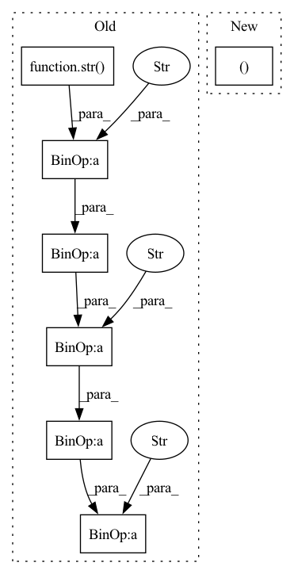

Pattern ID :37387

Before Change
base_base_loc = here / "processed_data"
// import pdb ; pdb.set_trace()
if append_time:
loc = base_base_loc / ("mujoco" + str(time_seq)+"_"+ str(y_seq) + "_" +str(missing_rate)+"_time_aug")
else:
loc = base_base_loc / ("mujoco" + str(time_seq)+"_"+ str(y_seq) + "_" +str(missing_rate))
if os.path.exists(loc):
After Change
test_final_index, device,
num_workers=0, batch_size=batch_size)
return times, train_dataloader, val_dataloader, test_dataloader, num_classes, input_channels
In pattern: SUPERPATTERN
Frequency: 3
Non-data size: 7
Instances
Fragment ID: 107675098
Project Name: sheoyon-jhin/ancde
Commit Name: b8494686b72d30b2d38c9acceff904a8fdb7eeda
Time: 2022-01-10
Author: sheoyonj@yonsei.ac.kr
File Name: experiments/datasets/mujoco.py
M Class Name: AnonimousClass
N Class Name: AnonimousClass
M Method Name: get_data(6)
N Method Name: get_data(5)
M Parent Class:
N Parent Class:
M File Name: experiments/datasets/mujoco.py
N File Name: experiments/datasets/mujoco.py
M Start Line: 69
M End Line: 116
N Start Line: 65
N End Line: 115
'>
Before Change
labels = [a.label for a in item.annotations
if a.type == AnnotationType.label]
if labels:
wider_annotation += "%s\n" % (str(labels[0]) + "--" \
+ label_categories[labels[0]].name + "/" \
+ item.id + WiderFacePath.IMAGE_EXT)
if item.has_image and self._save_images:
self._save_image(item, osp.join(save_dir, subset_dir,
WiderFacePath.IMAGES_DIR, str(labels[0]) + "--" \
After Change
if a.type == AnnotationType.label]
if labels:
image_path = "%s--%s/%s" % (
labels[0], label_categories[labels[0]].name,
item.id + WiderFacePath.IMAGE_EXT)
else:
image_path = "%s/%s" % (WiderFacePath.IMAGES_DIR_NO_LABEL,
item.id + WiderFacePath.IMAGE_EXT)
'>
Fragment ID: 107675064
Project Name: openvinotoolkit/datumaro
Commit Name: 1325eef27b7478b4e474ad56a53a6552f57dcba4
Time: 2021-02-16
Author: anastasia.yasakova@intel.com
File Name: datumaro/plugins/widerface_format.py
M Class Name: WiderFaceConverter
N Class Name: WiderFaceConverter
M Method Name: apply(1)
N Method Name: apply(1)
M Parent Class: Converter
N Parent Class: Converter
M File Name: datumaro/plugins/widerface_format.py
N File Name: datumaro/plugins/widerface_format.py
M Start Line: 119
M End Line: 168
N Start Line: 131
N End Line: 176
'>
Before Change
+ " File: " + video_name + "\n\n"
+ " Resolution: " +
str(width) + "x" + str(height) + "\n\n"
+ " Size: " +
str(truncate(file_size / 1048576, 2)) + " MB" + "\n\n"
+ " Duration: " + str(minutes) +
":" + str(round(seconds)) + "\n\n"
+ " Frames: " + str(num_frames) + "\n\n"
+ " Fps: " + str(round(frame_rate)) + "\n\n")
video_header = ttk.Label(root,
text="Video info",
After Change
// 2) get first frame of the video
while(cap.isOpened()):
ret, frame = cap.read()
if ret == False:
break
cv2.imwrite(fist_frame, frame)
'>
Fragment ID: 107675071
Project Name: djdefrag/qualityscaler
Commit Name: 66b6f13eca96c3a97a48871850754b01b7403ab2
Time: 2022-06-02
Author: jjluca96@gmail.com
File Name: QualityScaler.py
M Class Name: AnonimousClass
N Class Name: AnonimousClass
M Method Name: show_video_info_with_drag_drop(1)
N Method Name: show_video_info_with_drag_drop(1)
M Parent Class:
N Parent Class:
M File Name: QualityScaler.py
N File Name: QualityScaler.py
M Start Line: 1081
M End Line: 1126
N Start Line: 1128
N End Line: 1198